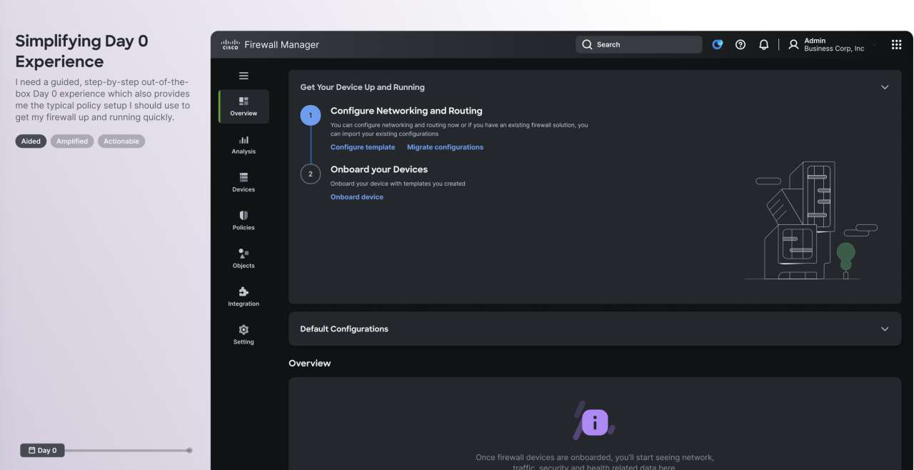
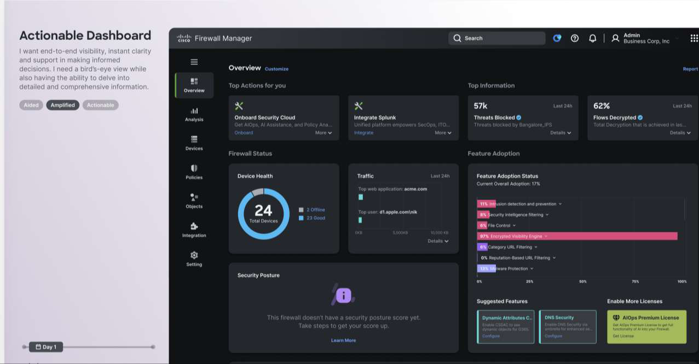

Simplify Firewall Management
Simplify the system. Amplify the outcome
Reimagining Cisco Secure Firewall Management Center to make
complex security management simpler, more intuitive, and
actionable helping security teams manage policies, threats,
and network intelligence with greater clarity and
confidence.
Enterprise UX
Network Security
Cisco
The Spark
In 2024, during a roadmap planning session, a simple customer request stopped the room: someone wanted the command-line interface back — a feature we'd deprecated years earlier.
As the design leader on Cisco Secure Firewall, I connected directly with the customer. The real ask quickly surfaced: they didn't actually want the CLI back, they wanted what it used to give them — a fast, direct way to find and fix a problem. The core issue became obvious:
"Troubleshooting from the GUI was like extracting a wisdom tooth."
The Context & Scale
This wasn't a problem we could ignore. Cisco Secure Firewall is one of our largest, highest-stakes products with over $1.2B in ARR, securing networks for 63,000+ customers globally. It encompasses 15 years of design, 3,000+ screens, and 5,000+ user journeys.
It was built to be powerful, but it forgot to be loved. At this scale, every point of friction compounds across tens of thousands of operators every single day.
Discovery Process
This customer conversation ignited a 6-week design sprint (code-named GOAT) with a 20-member cross-functional team across PM, Engineering, and Design.
To truly understand the depth of the issue, our discovery phase included 14 in-depth stakeholder interviews, reviewing 4 NPS customer recordings, and analyzing feedback from 116 detractors. We leveraged this collective experience to identify key pain points: administrators were struggling with evolving challenges like ransomware and IoT expansion, all while wrestling with a slow, unintuitive interface.
The Vision: Aided, Amplified, Actionable
Our proposal, which quickly gained executive sponsorship, was to deliver a simple yet powerful firewall management experience defined by three pillars:
Aided: Aid the customer in their configuration, troubleshooting, and analytics.
Amplified: Draw attention to capabilities that customers often don't realize exist to help them better secure their networks.
Actionable: Provide guidance to simplify and improve the overall management experience.
We framed this through the lens of a user narrative—a story of "Aric," a network administrator facing daily hurdles. This narrative helped build empathy and align the team around a cohesive north star experience.
Results & New Experience
We translated the vision into high-fidelity designs targeting quick wins and long-term architectural improvements. Here are key highlights of the new experience:
Simplifying Day 0 Experience
We introduced a guided, step-by-step out-of-the-box experience to help admins confidently set up typical policies and get their firewall running quickly.

Actionable Dashboard
The new dashboard provides end-to-end visibility and instant clarity. It gives a bird's-eye view of device health and security posture while allowing admins to delve into detailed, comprehensive troubleshooting information.

Strategic Roadmap
The 6-week sprint successfully redefined the vision for the next 6-8 quarters of our roadmap. We prioritized the recommendations into three phases:
P1 - Actionable Dashboard: Implementing the end-to-end visibility and instant clarity views.
P2 - Guided Troubleshooting: Easy discovery of issues with AI Assistant support and health-related remediation steps.
P3 - Day 0 Experience: Automating repetitive tasks using templates for setup and configuration.